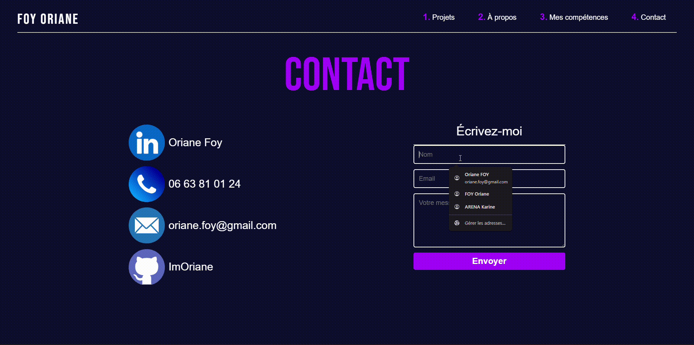

Mon portfolio
Dans le cadre de ma formation en BTS SIO (SLAM), j’ai réalisé un portfolio personnel afin de mettre
en avant mes compétences techniques, mes projets et ma progression en développement web. Ce projet,
au-delà d’un simple devoir scolaire, s’inscrit dans une démarche professionnelle, puisqu’il constitue
un véritable outil de communication pour tout développeur, offrant une vitrine claire de son savoir-faire
et de sa créativité. L’objectif était de concevoir mon premier site web personnel en utilisant les langages
HTML, CSS et JavaScript, tout en développant une présence en ligne susceptible de favoriser de futures opportunités
professionnelles. La phase de conception sur Figma m’a beaucoup aidée à réfléchir à l’interface et à faciliter le
développement grâce à des maquettes précises. Ce projet m’a permis d’améliorer mes compétences en structuration du code,
en organisation du CSS, en gestion des animations et en responsive design, rendant le site fluide et adapté à différents
périphériques. Enfin, plusieurs améliorations sont envisageables, comme l’ajout d’un système de filtrage des projets selon
les langages ou technologies utilisées, ainsi qu’une optimisation mobile avancée pour perfectionner l’expérience utilisateur
sur les appareils de plus petite taille.
